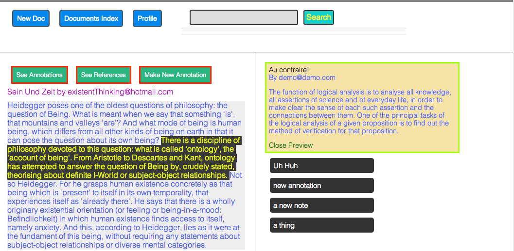
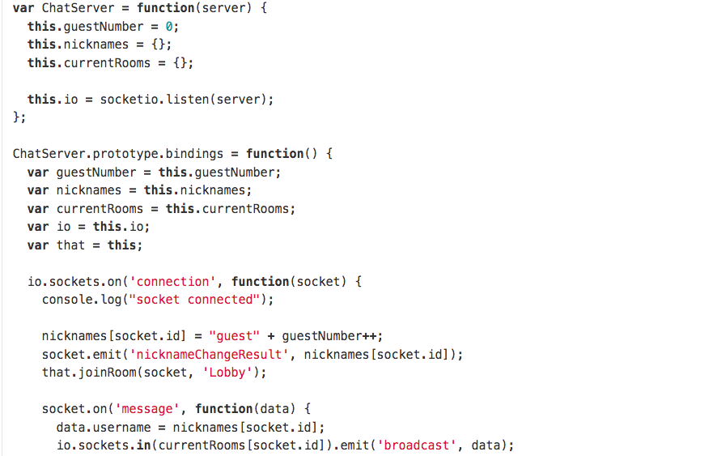
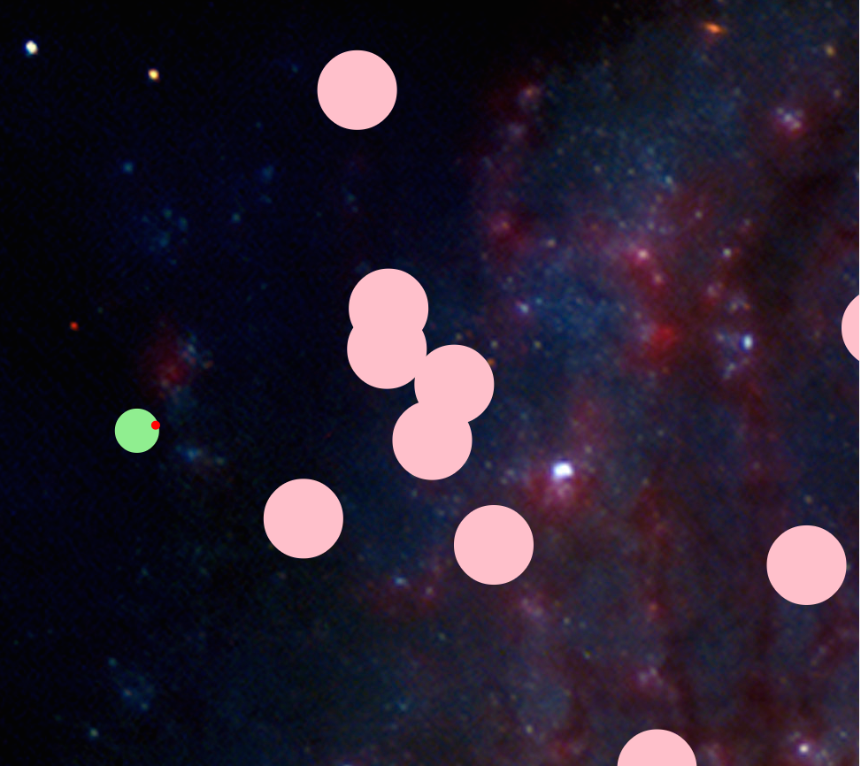

Drake Talley
Welcome to my personal site!
Web Developer for Hire in the greater NY metro area.
GlossolGenius: A Rap Genius Clone for Academics
ChatSock
Chat App in Node.jsRails Undone An exercise in rebuilding Rails
Glossol Genius: A Rap Genius Clone for Academics
Footnotes and external links are hard. This is easier.
GlossolGenius was inspired by the RapGenius UI for annotating documents but extends this basic functionality by supporting multiple references and annotations for each document, much like academic footnotes or links on a blog to content on other sites. GG is implemented with a Rails JSON API serving up content to a Backbone.js front-end.
Chat Sock: MultiRoom IRC-Lite
Chat Sock is a basic chat application built on a hand-rolled Node server using the Socket.io library. Simple IRC commands like /join and /nick are included to change a user nickname as welll as join/create different rooms. Message and admin updates are asynchronously pushed to the browser client and display in a JQuery UI.

Asteroids: A Classic!
A clone of the traditional arcade game. Shoot bullets at big round asteroids that are heading at you. Implements Canvas, JQuery, and a bunch of javascript on the back end to render game movement. A good time all around.
